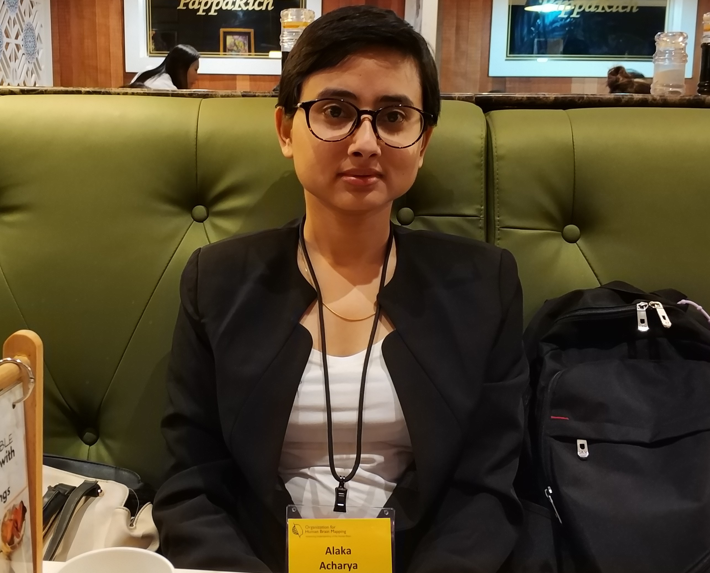

Alaka Acharya

Email: alakacharya [at] biomedical [dot] edu [dot] np | Twitter: @acharyaalaka
I’m a Cognitive Neuroscientist with a major interest in connectivity and morpholometry.
I am looking for postdoctoral researcher and faculty positions starting Fall 2022. So if you are looking to hire someone with my background, please email me!
Education
- PhD in Biomedical Engineering (ABD, Expected April 2022 )
Harbin Institute of Technology, Harbin, PR China
- Master's in Biomedical Engineering, 2014
Andhra University, Vishakhapatnam, Andhra Pradesh, India
- Bachelor's in Biomedical Engineering, 2010
College of Biomedical Engineering and Applied Sciences, Purbanchal University, Kathmandu, Nepal
Publications
- Acharya, A., Liang, X., Tian, W., Jiang, C., Han, Y., & Yi, L. (2019). White Matter Hyperintensities Relate to Basal Ganglia Functional Connectivity and Memory Performance in aMCI and SVMCI. Frontiers in neuroscience, 13, 1204.
- Kozhevnikov, E., Qiao, S., Han, F., Yan, W., Zhao, Y., Hou, X., Acharya, A., ... & Chen, X. (2019). A dual-transduction-integrated biosensing system to examine the 3D cell-culture for bone regeneration. Biosensors and Bioelectronics, 141, 111481. Best Paper Award - AI Track
- Zhao, Y. F., Qiao, S. P., … Acharya, A., … Nie, Y. (2017). Modulating three-dimensional microenvironment with hyaluronan of different molecular weights alters breast cancer cell invasion behavior. ACS applied materials & interfaces, 9(11), 9327-9338
Experience
- Department Head, April 2021 – Present, Biomedical Research and Development
Assistant Professor, April 2021 – Present, Classes Taught: Medical Image Processing, Biomaterials, Tissue Device Interaction. Thesis/Project Advisor.
Assistant Professor, December 2014 – August 2015, Classes Taught: Biomaterials, Digital Signal Processing (Practical Component), Biomedical Instrumentation (Practical Component), Tissue Device Interaction. Thesis Advisor.
College of Biomedical Engineering and Applied Sciences, Purbanchal University, Kathmandu, Nepal
- Assistant Professor/ Adjunct Faculty, December 2021 – Present
Department of Electrical Engineering, Pulchowk Campus, Institute of Engineering, Tribhuvan University, Nepal
Classes Taught: Biomedical Instrumentation
- Assistant Professor/Visiting Faculty, January 2022 – Present
Department of Electrical and Electronics Engineering, School of Engineering, Kathmandu University, Dhulikhel, Banepa, Nepal
Classes Taught: Fundamentals of Biomedical Engineering
- Lecturer, December 2014 – August 2015
Department of Electrical and Electronics Engineering, School of Engineering, Kathmandu University, Dhulikhel, Banepa, Nepal
Class: Fundamentals of Biomedical Engineering
- Lecturer / Adjunct Faculty, December 2014 – April 2015
Janakpur Engineering College, Institute of Engineering, Tribhuvan University, Bhaktapur, Nepal
Classes Taught: Biomedical Instrumentation
- Service Engineer, May 2011 – June 2012
Alliance Healthcare Technologies Pvt. Ltd., Kathmandu, Nepal
Worked in Sales and servicing of medical equipment as a part of a team and also in individual capacity.
Research / Academic Projects
- Voxel Based Morphometry and Functional Connectivity Analysis of Human Cerebellum, January 2019 – Present
Working to observe functional and structural changes in cerebellum and its relation with cerebellar cortex and basal ganglia. Part of PhD dissertation.
- Structural and functional connections of basal ganglia in rat dementia model, May 2019 – Present
Working to find connections between basal ganglia nucleus and cortex in rat dementia model and correlations in behaviour. Part of PhD dissertation.
- Exploring structural and functional disruptions in MCI patients using multimodal neuroimaging techniques, July 2016 – December 2018
Worked to evaluate WMHs and functional network connectivity of different BG subdivisions in patients with SVMCI and aMCI. Investigated how alterations of WMHs and network-level functional interactions of BG nucleus relate to episodic learning and memory deficits. Resulted in one publication and two conference presentations.
- Mammographic Cancer Detection and Classification Using Clustering and
Neural Network Classifier, October 2013 – September 2014
Stage classification using probabilistic neural network based on the detection of cancer region Master’s Thesis work
Miscellaneous
- Languages: English, Nepali, Hindi, Urdu (oral only)
~~~
Last Updated 07th November 2021